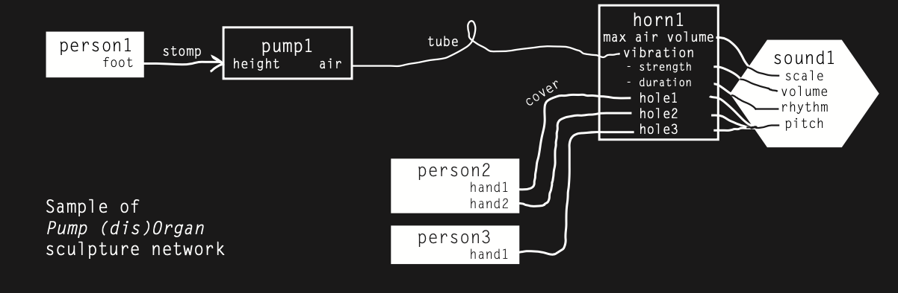

PVC pipe, rubber gloves, metal scraps, tubing and hoses, foot pumps
A pump organ spanning 5 floor of
the List stairwell. The first floor
houses 4 footpumps. On floors 2
through 5 are horns that each have
their respective pitch controls on
the floor they are placed at, and are
all connected to the pump through
long tubes.

With this project, I was very much
interested in exploring the same principles
as the Hexadeca-kit, but now with the added focus
points of distance, volume, scale, and tonal
instrumentation. How can artistic collaborators
move beyond large distances to create together,
all while encouraging this creativity to exist
in the same non-hierarchical space that the
Hexadeca-kit champions? How will sound overtake
such a resonant space like the List stairwell?
And how can music-making resist traditional
ideas of order when the sound making process
resembles and sounds closer to a traditional
instrument?
Because of the technical complexity
of this project and time restraints, I do think
I could have designed the interactive elements of
the piece to be more conducive to chance musical
creation, and to generally meet my goals better.
If there had been a pump at each floor, not only
would the fluid mechanics work better as far as
getting the horns to sound after travelling upwards
through such long tubes, but there could be more
conversation between people at different floors.
The first floor controls all sound output, and
all other floors can only control pitch, which
lends itself to an unbalanced creative dynamic.